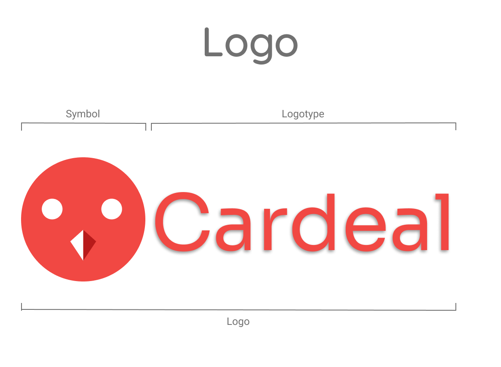
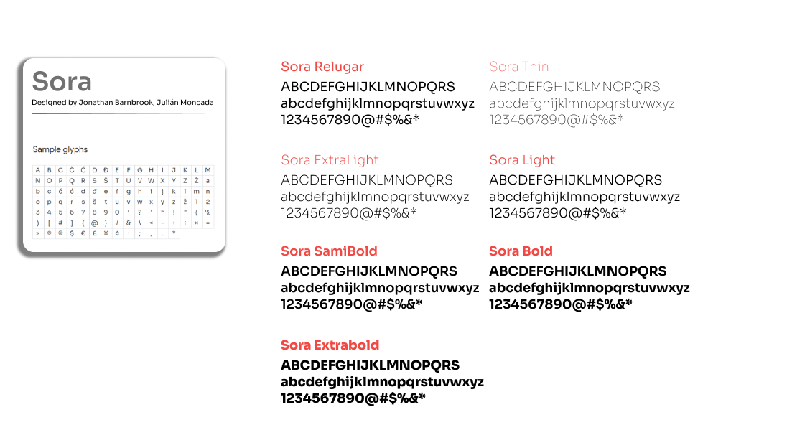
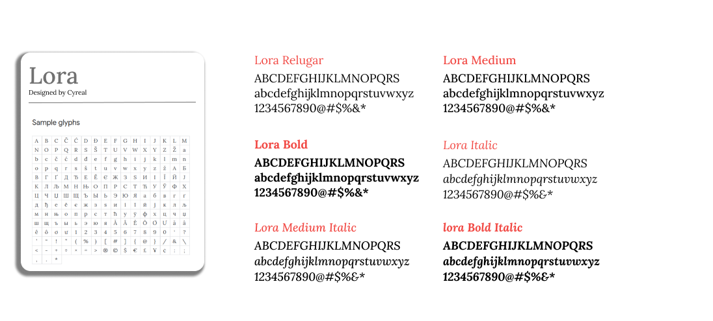

Identidade Visual
1. Introdução
A identidade visual é importante para definir parâmetros visuais do projeto em desenvolvimento. Assim, o conjunto de elementos que compõe a identidade visual, são as cores, tipografia, logo e símbolo.
2. Metodologia
Para a montagem da identidade visual, primeiro foi escolhido o nome e o símbolo do projeto, escolhido pelos membros na Design Sprint, por possuírem características comuns com o projeto da equipe. A escolha das cores foi realizada em cima das cores que compõem o símbolo escolhido, o pássaro cardeal, e depois utilizando a ferramenta de palheta de cores para buscar cores similares, a ferramenta Coolors foi usada para buscar cores análogas e o resultado dessa consulta foi debatido pelos membros para escolher as cores em definitivo. A metodologia usada para definir a tipografia, foi realizada uma votação pelos membros entre as melhores fontes abertas disponibilizados por uma matéria do site awwwards, site reponsável por divulgação de projetos de web design profissional.
3. Logo
Logo é um símbolo de identificação para a empresa ou marca. A logo do projeto é o símbolo do pássaro cardeal, a escolha do nome e do símbolo, realizada no momento de debate sobre o nome do projeto, escolhido por sua características semelhantes à ideia do projeto, um pássaro que se adapta bem ao novo ambiente, que representaria os clientes que acessam o site Cardeal para buscar novo local para morar.
Figura 1 - Logo, versão 1.0.

Fonte: Site Figma
4. Tipografia
Tipografia é o formato e o arranjo das palavras, define a composição visual dos textos. A tipografia escolhida para o projeto foi divida em duas partes, a prima parte representa a fonte que compõe a Logo, a fonte escolhida foi Sora, e a segunda parte representa as fontes usadas no website, escolhidas duas fontes Sora e Lora.
4.1. Fonte - Sora
A fonte Sora foi escolhida para a Logo e para o uso no website. Mais informações sobre a fonte e licença de uso são disponibilizadas pelo site fonts.google.
Figura 2 - Representação da fonte Sora, versão 1.0.

Fonte: Site Figma
4.1. Fonte - Lora
A fonte Lora foi escolhida para o uso no website. Mais informações sobre a fonte e licença de uso são disponibilizadas pelo site fonts.google.
Figura 3 - Representação da fonte Lora, versão 1.0.

Fonte: Site Figma
5. Cores
A cor possui sua influência na psicologia humana, e as escolhas das cores representam o tipo de mensagem que deseja transmitir. A escolha foi realizada baseando-se nas cores que compõe o símbolo do projeto e buscando cores análogas ao resultado para possuir maiores váriações de cores. Essa consulta foi realizada por meio do site Coolors. Foram escolhidas apenas 4 cores para compor o projeto, para possuir um visual mais limpo.
5.1. Cores Principais
As cores principais representam as cores que serão usadas no desenvolvimento da proposta de software.
Figura 4 - Cores principais, versão 1.0.
{kind=link}
Fonte: Site Coolors
| Cor | Nome | RGB | CMYK | WEB |
|---|---|---|---|---|
| Tart Orange | 241, 72, 67 | 0, 70, 72, 5 | #F14843 | |
| Sonic Silver | 121, 121, 123 | 2, 2, 0, 52 | #79797B | |
| White | 255, 255, 255 | 0, 0, 0, 0 | #FFFFFF | |
| Black | 2, 1, 6 | 67, 83, 0, 98 | #020106 | |
| Independence | 63, 61, 86 | 27, 29, 0, 66 | #3f3d56 |
5.2. Cores Secundárias
As cores secundárias representam as diferentes tonalidades das cores principais, incluindo assim diferentes tons ao projeto.
Figura 5 - Cores secundárias, versão 1.0.
{kind=link}
Fonte: Site Coolors
6. Identidade Visual
Figura 6 - Cardeal Identidade Visual, versão 1.0.
{kind=link}
Fonte: Site Figma
7. Referências
-
awwwards: 20 Best Google Web Fonts, acessado dia 18 de agosto de 2021.
-
awwwards: The awards of design, creativity and innovation on the internet, acessado dia 18 de agosto de 2021.
-
Coolors: Create the perfect palette or get inspired by thousands of beautiful color schemes., acessado dia 18 de agosto de 2021.
-
Fonts Google: Font Lora, designed by Cyreal, acessado dia 18 de agosto de 2021.
-
Fonts Google: Font Sora, designed by Jonathan Barnbrook, Julián Moncada, acessado dia 18 de agosto de 2021.
-
github: Arquitetura-desenho - A monitoria, acessado dia 18 de agosto de 2021.
-
Figma: the collaborative interface design tool., acessado dia 18 de agosto de 2021.
8. Versionamento
| Data | Versão | Descrição | Autor(es) |
|---|---|---|---|
| 18/08/2021 | 1.0 | Criação do documento | Tomás Veloso |
| 18/08/2021 | 1.1 | Debate e escolha da identidade visual | Todos os membros |
| 20/08/2021 | 1.2 | Revisão do documento | Douglas Castro e Gustavo Duarte |